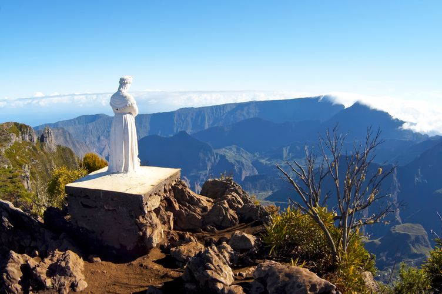
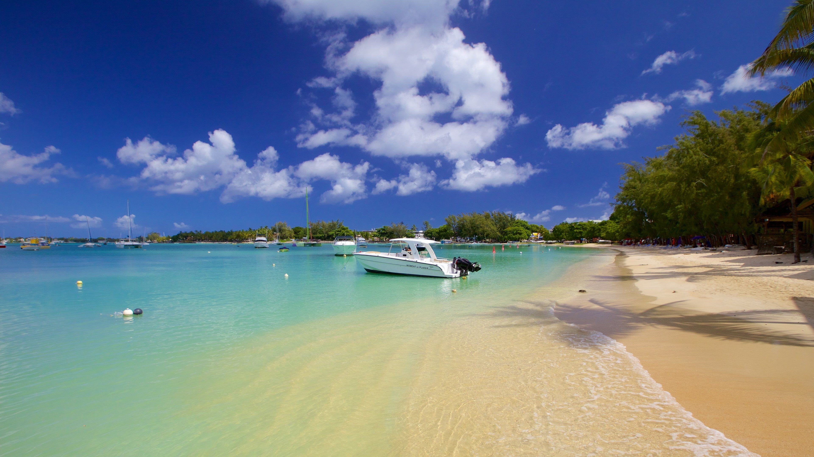

I spent one week in La Réunion, a French island located in the Indian Ocean, not far from Madagascar. I enjoyed the local food, which is a mix of African and Asian cuisine, in relation with the local population diverse roots. Nature-wise, La Réunion is amazing. It has sandy beaches, rainforest, mountains, desert, volcanos…We woke up at 3am to head to the highest car park we could go to and started our trek to the Grand Benare peak. Basically, you need to be at the summit before 11am otherwise you will only see heavy clouds in the afternoon, and the trek is estimated to last 6 hours. We took 8 hours to get to the top and saw clouds at the summit, but it was worth it. We had a great clear view of the island all along.

After La Réunion, I took a 30-minute flight (yes, it exists!) to head to Mauritius. It was a completely different experience than La Réunion. Very hot weather and a lot of mosquitos! But the beaches, the sea color and temperature are nice and relaxing. I liked wandering around Grand Baie town. The local population was very helpful and welcoming. And there were a lot of activities available for tourists such as tours in the surrounding islands.
